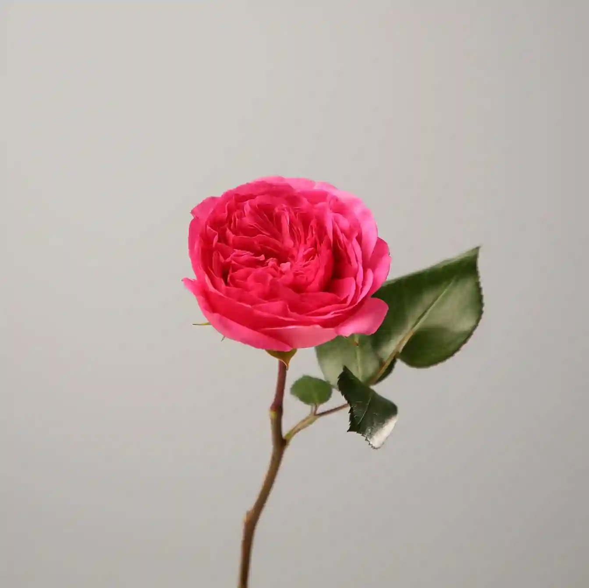

Роза
Сезон цветения:
Лето-Осень
Срок жизни:
Многолетнее
Высота растения:
30-200 см
Тип:
Кустарник
Описание
Роза — один из самых популярных и красивых цветков в мире, символ любви и красоты. Существует множество сортов роз, различающихся по цвету, форме и аромату. Эти цветы известны своими нежными лепестками и часто колючими стеблями.
Розы выращиваются уже более 5000 лет и используются в парфюмерии, медицине и, конечно же, в декоративных целях. Они могут быть как садовыми, так и комнатными растениями, требующими особого ухода и внимания.
Интересные факты
- Самая старая роза в мире растет в Германии и ей более 1000 лет
- Черных роз не существует в природе — самые темные сорта实际上是深红色或紫色
- Розовое масло — одно из самых дорогих в мире